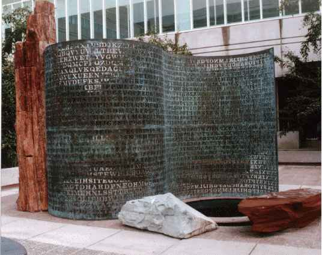

|
Up to The Science Realm: John's Virtual Sci-Tech Universe AboutJohn|Send email to John +John's Stuff+ (QM from SR|4-Vectors|QuantumPhase|Science+Math|Frontiers|Kryptos|PrimeSieve|SecretCodes) (Forced Induction(SumsOfPowersOfIntegers)|Fractals|Sci-PanPoems|KidScience|Turkish) |
Site last modified: 2004-Feb-18-10am |

Kryptos is a sculpture / encrypted puzzle located at CIA headquarters in Langley, VA.
It
was designed by sculptor James Sanborn and retired CIA cryptographer Edward M. Scheidt.
It was
created in the early 90's, and withstood scrutiny for many years. It was only in the late 90's
that it gave up some of its secrets.
Parts 1-3 were solved independently by Jim Gillogly, a computer programmer, and
David Stein, a CIA analyst.
However, part 4 has remained a mystery, refusing to give up its secrets... till now...
Part 4's initial metaphorical solution was found by John B. Wilson, on 5 Sept
2003, and details have been emerging ever since.
Kryptos is composed of several different layers. It uses 4 main types of encoding.
Sec.0 - Morse
Sec.1 - Vigenère
Sec.2 - Vigenère
Sec.3 - Modular Transposition / Row-Column Transposition
Sec.4 - Metaphorical
There are numerous clues and hints throughout the sculpture and slabs.
0th Section: (Kryptos
sculpture + Other stones)
The Kryptos sculpture has two "pages", a cipher side and a Vigenère tableau
side.
|
KRYPTOS | |
| Cipher side | Tableau side |
|
EMUFPHZLRFAXYUSDJKZLDKRNSHGNFIVJ YQTQUXQBQVYUVLLTREVJYQTMKYRDMFD VFPJUDEEHZWETZYVGWHKKQETGFQJNCE GGWHKK?DQMCPFQZDQMMIAGPFXHQRLG TIMVMZJANQLVKQEDAGDVFRPJUNGEUNA QZGZLECGYUXUEENJTBJLBQCRTBJDFHRR YIZETKZEMVDUFKSJHKFWHKUWQLSZFTI HHDDDUVH?DWKBFUFPWNTDFIYCUQZERE EVLDKFEZMOQQJLTTUGSYQPFEUNLAVIDX FLGGTEZ?FKZBSFDQVGOGIPUFXHHDRKF FHQNTGPUAECNUVPDJMQCLQUMUNEDFQ ELZZVRRGKFFVOEEXBDMVPNFQXEZLGRE DNQFMPNZGLFLPMRJQYALMGNUVPDXVKP DQUMEBEDMHDAFMJGZNUPLGEWJLLAETG |
ABCDEFGHIJKLMNOPQRSTUVWXYZABCD AKRYPTOSABCDEFGHIJLMNQUVWXZKRYP BRYPTOSABCDEFGHIJLMNQUVWXZKRYPT CYPTOSABCDEFGHIJLMNQUVWXZKRYPTO DPTOSABCDEFGHIJLMNQUVWXZKRYPTOS ETOSABCDEFGHIJLMNQUVWXZKRYPTOSA FOSABCDEFGHIJLMNQUVWXZKRYPTOSAB GSABCDEFGHIJLMNQUVWXZKRYPTOSABC HABCDEFGHIJLMNQUVWXZKRYPTOSABCD IBCDEFGHIJLMNQUVWXZKRYPTOSABCDE JCDEFGHIJLMNQUVWXZKRYPTOSABCDEF KDEFGHIJLMNQUVWXZKRYPTOSABCDEFG LEFGHIJLMNQUVWXZKRYPTOSABCDEFGH MFGHIJLMNQUVWXZKRYPTOSABCDEFGHI |
|
EN DYAHR
OHNLSRHEOCPTEOIBIDYSHNAIA CHTNREYULDSLLSLLNOHSNOSMRWXMNE TPRNGATIHNRARPESLNNELEBLPIIACAE WMTWNDITEENRAHCTENEUDRETNHAEOE TFOLSEDTIWENHAEIOYTEYQHEENCTAYCR EIFTBRSPAMHHEWENATAMATEGYEERLB TEEFOASFIOTUETUAEOTOARMAEERTNRTI BSEDDNIAAHTTMSTEWPIEROAGRIEWFEB AECTDDHILCEIHSITEGOEAOSDDRYDLORIT RKLMLEHAGTDHARDPNEOHMGFMFEUHE ECDMRIPFEIMEHNLSSTTRTVDOHW?OBKR UOXOGHULBSOLIFBBWFLRVQQPRNGKSSO TWTQSJQSSEKZZWATJKLUDIAWINFBNYP VTTMZFPKWGDKZXTJCDIGKUHUAUEKCAR |
NGHIJLMNQUVWXZKRYPTOSABCDEFGHIJL
OHIJLMNQUVWXZKRYPTOSABCDEFGHIJL PIJLMNQUVWXZKRYPTOSABCDEFGHIJLM QJLMNQUVWXZKRYPTOSABCDEFGHIJLMN RLMNQUVWXZKRYPTOSABCDEFGHIJLMNQ SMNQUVWXZKRYPTOSABCDEFGHIJLMNQU TNQUVWXZKRYPTOSABCDEFGHIJLMNQUV UQUVWXZKRYPTOSABCDEFGHIJLMNQUVW VUVWXZKRYPTOSABCDEFGHIJLMNQUVWX WVWXZKRYPTOSABCDEFGHIJLMNQUVWXZ XWXZKRYPTOSABCDEFGHIJLMNQUVWXZK YXZKRYPTOSABCDEFGHIJLMNQUVWXZKR ZZKRYPTOSABCDEFGHIJLMNQUVWXZKRY ABCDEFGHIJKLMNOPQRSTUVWXYZABCD |
Other elements around the Kryptos sculpture:
Jim Gillogly's Kryptos Pictures, including the
Kryptos sculpture, compass, and Morse code segments
Compass, needle attracted by lodestone, south-end pointing approx. 15-30 degrees N of E
Several 4-layered stone blocks/slabs, 2 of which are on either end of a small pond
Pyramid design on corner of a "kite/shield-shaped" block
Morse code phrases on copper plate covering part of granite slabs:
. . ...- .. .-. - ..- .- .-..
.-.. -.-- . | . . . . . .
.. -. ...- .. ... .. -... .-.. .
e e V I R T U
A L L Y e | e e e
e e e I N V I S I
B L E
-.. .. --. . - .-
.-.. . . . | .. -. - . .-.
.--. .-. . - .- - .. -cut
D I G E T
A L e e e | I N T E R P R E T A T I
-?
. . ... .... .- -.. --- .-- .
. | ..-. --- .-. -.-. . ... .
. . . .
e e S H A D O
W e e | F O R C E
S e e e e e
.-.. ..- -.-. .. -.. . . . |
-- . -- --- .-. -.-- .
L U C I
D e e e | M E M O R Y e
- .. ... -.-- --- ..- .-. | .--.
--- ... .. - .. --- -.
T I S Y O
U R | P O S
I T I O N
... --- ...
S O S
.-. --.-
R Q
The Morse code lines on the individual slabs appear to be parallel to one another, but not
necessarily parallel to lines on the other slab.
1st Section (Poetry)
Kryptos Solution:
| BETWEEN SUBTLE SHADING AND THE ABSENCE OF LIGHT LIES THE NUANCE OF IQLUSION |
2nd Section (Secret
Message)
Kryptos Solution:
| IT WAS TOTALLY INVISIBLE HOWS THAT POSSIBLE ? THEY USED THE EARTHS MAGNETIC FIELD X THE INFORMATION WAS GATHERED AND TRANSMITTED UNDERGRUUND TO AN UNKNOWN LOCATION X DOES LANGLEY KNOW ABOUT THIS ? THEY SHOULD ITS BURIED OUT THERE SOMEWHERE X WHO KNOWS THE EXACT LOCATION ? ONLY W_W THIS WAS HIS LAST MESSAGE X THIRTY EIGHT DEGREES FIFTY SEVEN MINUTES SIX POINT FIVE SECONDS NORTH SEVENTY SEVEN DEGREES EIGHT MINUTES FORTY FOUR SECONDS WEST ID BY ROW_S |
3rd Section (Howard Carter
@ Tutankhamen's Tomb, 26 Nov 1922)
Kryptos Solution:
| SLOWLY DESPARATLY SLOWLY THE REMAINS OF PASSAGE DEBRIS THAT ENCUMBERED THE LOWER PART OF THE DOORWAY WAS REMOVED WITH TREMBLING HANDS I MADE A TINY BREACH IN THE UPPER LEFT HAND CORNER AND THEN WIDENING THE HOLE A LITTLE I INSERTED THE CANDLE AND PEERED IN THE HOT AIR ESCAPING FROM THE CHAMBER CAUSED THE FLAME TO FLICKER BUT PRESENTLY DETAILS OF THE ROOM WITHIN EMERGED FROM THE MIST X CAN YOU SEE ANYTHING Q (?) |
4th Section (The Krypt)
Kryptos Solution:
|
Yes, Wonderful Things!... |
Sec.4 is solved by using a metaphorical
decoding: Reread the section 3 decryption as instructions, then carry them out on section 4.
The primary keyword is KRYPTOS, qua crypt, and the secondary keyword is CANDLE. The
? is the "doorway" between sections 3 and
4, and is the position where the "tiny breach" is made.
Since this section is non-standard, I will give a little more explanation.
The various keywords are "hidden" throughout the sculpture and other pieces. Each
section has clues for solving the next section.
(0) There is a plainly visible Vigenère table with primary keyword KRYPTOS. The entire sculpture
appears like an ancient scroll or PALIMPSEST.
(1) The decrypted poem of section 1 leads to ABSCISSA by examining the first letters of
the poem.
(2) The decrypted secret message of section 2 gives the hint ID-BY-ROWS, as well as
references to Tut in the first letters of the words.
(3) The decrypted account of Tut's Tomb Discovery of section 3 can be reread metaphorically as
instructions to carry out.
(4) The decrypted "Krypt" of section 4, when combined with a "source" document, is
revealed as a digital hieroglyphic scroll.
The main point here is that there are clues to the decoding of each section, which are
found in the preceding sections.
Also, the Morse code phrases are important clues for solving section 4.
The main clues that section 4 is a virtual crypt are as follows:
KRYPTOS - Meaning hidden/cryptogram-code/crypt --> KRYPTOS
QUA KRYPT!
Jagged edges (rubble) above a smooth 4-row section (the
tomb) on right edge.
There are clues in each section for decrypting the next section. Assume that this
continues to hold for Sec.4...
Each decrypted section can be reread metaphorically to pertain to a single event - the opening of a
hidden crypt, Kryptos itself!
The keywords hint at the use of section 4 as an interactive PALIMPSEST by using the
ABSCISSA "x-coordinate" and "cutting away" concept..
Begin by
treating section 3 as instructions for decoding section 4...
The superscript chars are the opening to the passageway to the tomb.
There is a symbolic "RQ" compass and lodestone in encrypted section 4, which indicate the
correct position to insert the CANDLE.
The "SOS" message is very near this location as well, mirroring the "tiny
breach" where the real "SOS" phrase is.
It is only after the metaphoric instructions are followed that "details emerge from
the MIST..."
Can you see anything? - LOOK!
There is multiple metaphoric use of all
clues, hints, keywords, and decryptions.
Ultimately, Kryptos is both a virtual crypt and a
virtual hieroglyphic scroll, the inner code mirroring the outer structure.
There are undeniable details which can be found in decrypted section 4 that
mirror the text from the "Ancient Egypt" source document.
Mathematical analysis of the sec.3 decoding shows that only 1-of-113,569 possible ways
give the particular encoded details which are in the source document.
Although it is easy to fall prey to the "Bible Codes" fallacy, in this case we
are dealing with only 869 characters, essentially a part of a page, not a whole book.
The statistics are positive, not random chance.
Finally, the solution form was intuitively guessed before the actions were carried out,
i.e., I knew it was going to work before I did it! ... and it works!
The words/symbols were all "totally visible", but "virtually
invisible", until the context of the solution was known.
The fact that the very suggestive words TUT,
COFFIN,
GOLD, EGYPT, & maybe ANUBIS
don't exist until after you follow the instructions and insert the CANDLE,
etc. gives great credit to the theory that KRYPTOS is indeed a virtual crypt.
Further strengths are that A,I,R
can be found directly under the inserted CANDLE,
causing it to flicker, and that the M,I,S,T
rises to the "T is your position"
observation point at letter "T", just in front of
the candle, as in the real tomb.
see *John's KRYPTOS Part 4 Solution*
for coffins and King Tut + a lot more...